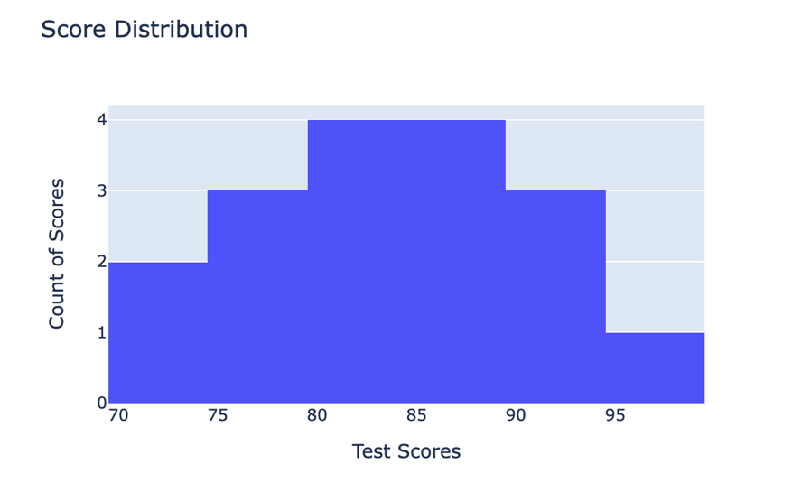
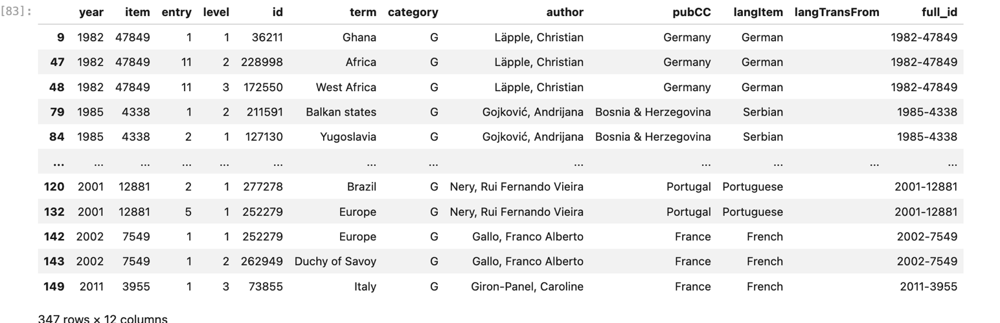
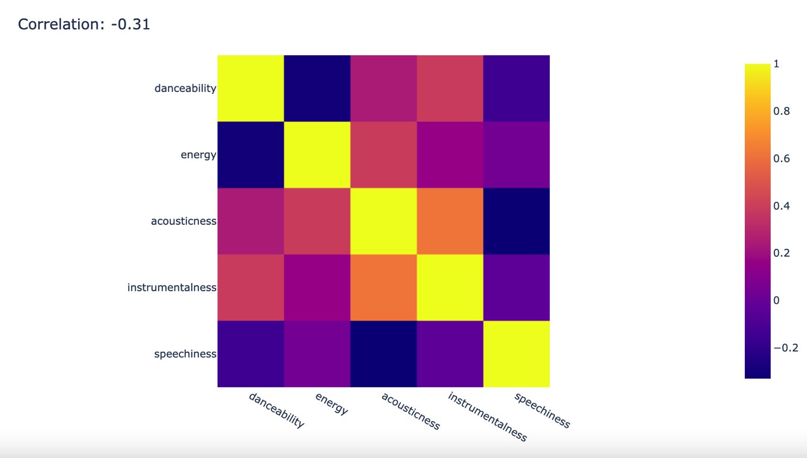
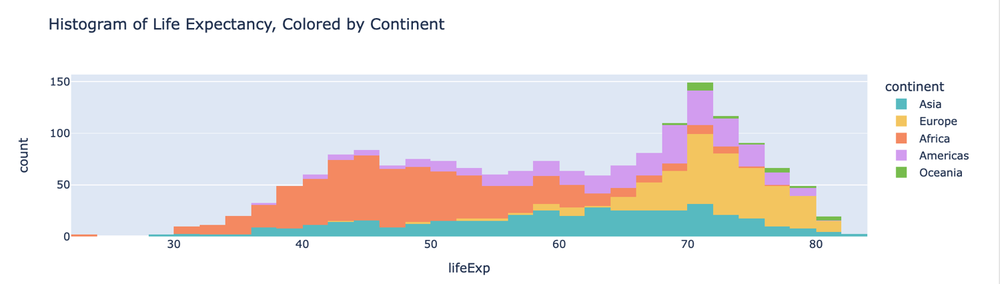
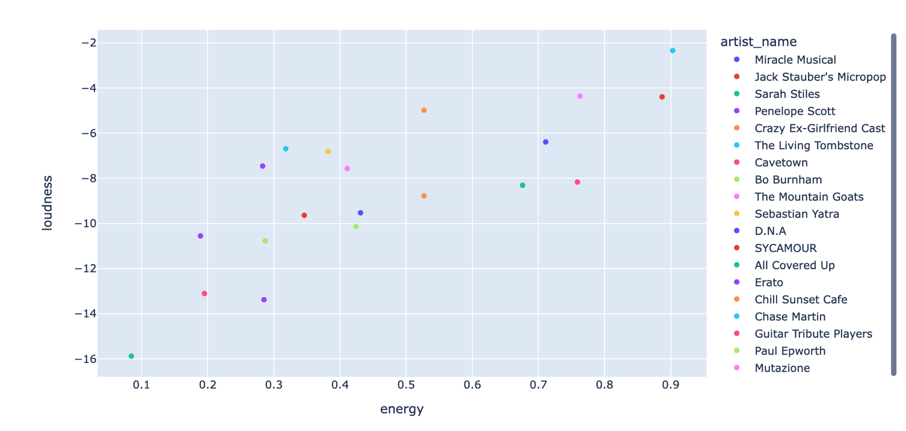
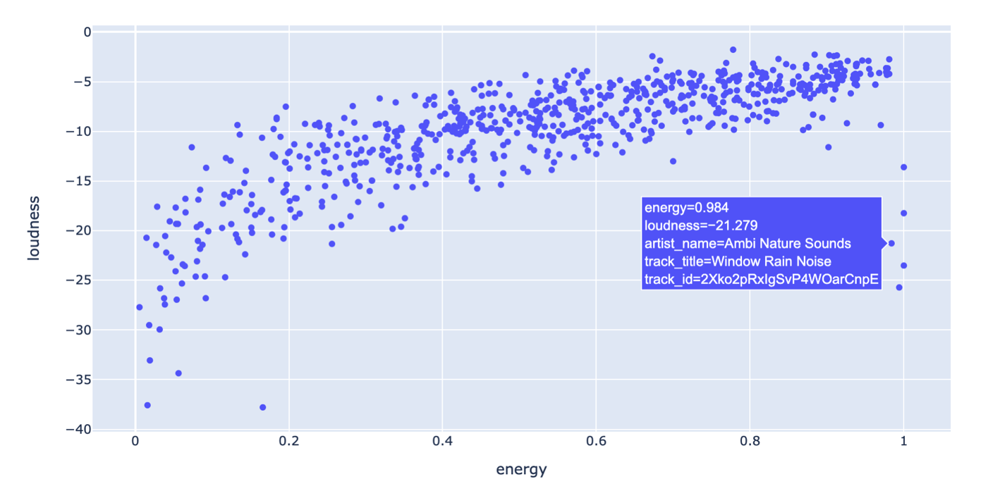

| Pandas Basics | Clean Data | Tidy Data | Filtering, Finding, and Grouping | Graphs and Charts | Networks |
|---|
Charts and Plots with Plotly Express
Our main resource is the Plotly Express library, which allows for interactive visualizations and more complex/powerful graphs with less code. . The Plotly Express documentation details the very wide range of bar charts, histograms, scatter plots, heat maps, polar (radar) figures you can create, and various ways of adding captions, legends, colors, etc.

| Contents of this Tutorial | |
|---|---|
| 1. | Bar Charts |
| 2. | Histograms |
| 3. | Scatter Plots |
| 4. | Radar or Spider Plots |
| 5. | Correlation Plots and Heatmaps |
| 6. | Correlation Does Not Equal Causation |
| 7. | Adjusting Chart Size |
| 8. | Pick Custom Color Scheme |
| 9. | Adjusting Axes |
| 10. | Adding a Title |
| 11. | Labels and Legends |
| 12. | X and Y Axis Tickmarks |
| 13. | Hover Data |
The first step is always to import the relevant library:
import plotly.express as pxFrom here you will normally:
- Define a figure by passing a dataframe to a method (such as
fig = px.histogram(df_hist(df)) - Specify special labels, formatting, or other features
- Show the figure with
fig.show(), or specify a file name if you would prefer to save it.
Bar Charts
Bar charts are used to display categorical data. They consist of vertical or horizontal bars that represent different categories and their corresponding values. Bar charts are excellent for comparing data across different categories. Learn more at Plotly Express
Here’s an example of a bar chart showing the sales of different products:
Sample Bar Chart Code
# import libraries
import pandas as pd
import plotly.express as px
# Create a DataFrame for bar chart
bar_data = {'categories': ['Product A', 'Product B', 'Product C'],
'sales': [100, 150, 120]}
df_bar = pd.DataFrame(bar_data)
# The barchart with Plotly Express specifying the source df, the columns to use as x and y axes,
# labels to use for those axes, and an overall title for the figure that will serve as your caption
fig = px.bar(df_bar,
x = 'categories', y= 'sales',
labels={'categories': 'Product Category', 'sales': 'Sales'},
title='Figure 1: Sales Report'
)
# Set width and height in pixels
fig.update_layout(width=600, height=400)
fig.show()
Histograms
Histograms are used to display the distribution of numerical data. They consist of a series of adjacent rectangles (bins) that represent the frequency or proportion of data falling within specific intervals. Histograms help us understand the shape and spread of data. Learn more at Plotly Express
Here’s an example of a histogram displaying the distribution of exam scores:
Sample Histogram Code
import pandas as pd
import plotly.express as px
# Create a DataFrame for bar chart
hist_data = {'scores': [80, 85, 90, 70, 75, 88, 82, 95, 92, 78, 87, 80, 85, 90, 73, 79, 83]}
df_hist = pd.DataFrame(hist_data)
# The histogram with Plotly Express specifying the source df, the column to use for the histogram,
# and title for the
fig = px.histogram(df_hist,
"scores",
labels={'scores': 'Test Scores'},
title="Score Distribution")
# option to rename the y axis
fig.update_yaxes(title_text='Count of Scores')
# Set width and height in pixels
fig.update_layout(width=600, height=400)
fig.show()
Scatter Plots
Scatter plots are used to display the relationship between two numerical variables. Each point on the plot represents the values of the variables. Scatter plots are useful for identifying patterns, trends, and outliers in the data. Learn more at Plotly Express
Here’s an example of a scatter plot showing the relationship between study hours and exam scores:
Sample Scatter Plot Code
# Plotly
import pandas as pd
import plotly.express as px
# Create a DataFrame for scatter plot
scatter_data = {'study_hours': [3, 4, 2, 5, 6, 5, 3, 4, 2, 6],
'exam_scores': [70, 80, 65, 90, 95, 85, 75, 80, 70, 90]}
df_scatter = pd.DataFrame(scatter_data)
# Plotly Scatter Plot
# Note that here we include a Trend Line calculated using the Ordinary Least Squares (ols) method.
# There are other methods, see documentation
# also note options to change opacity of the plot points and the color of the trend line.
fig_scatter = px.scatter(df_scatter,
x = 'study_hours', y = 'exam_scores',
opacity=1.00,
trendline='ols',
trendline_color_override='red',
labels={'study_hours': 'Study Hours', 'exam_scores' : "Examination Scores"},
title = "Scatter Plot of Study Hours vs Exam Scores, with Regression Line")
fig_scatter.show()
See More Info on Regressions, here
Scatter Plot with Variable Marker Size
Here we combine several data features to make a more interesting kind of Scatter Plot, showing the changing representation of various places over time. The examples draw from RILM Abstracts, the leading database of writings about music, all over the world. In this case we searched for the terms “travel explorations”, “explorers and travelers”, and “travel writings” in the RILM Database. We also restricted our results to only those subject entries that concerned “places” (the “G” category in the RILM Term taxonomy). This resulted in the following dataframe:

This was in turn passed to the our scatterplot function. The occurences of the place names (the Y axis) are plotted over time (X axis). The size of the marker reflects the relative number of occurences of that term in that year (the minimum is set with the ‘term_threshold’ argument). Terms that occur in the work of the same author are given the same color (we can show or hide these with the ‘legend’ argument). The title of the image is set with the ‘title’ argument. We can also set the heighth and width of the image with two other variables
final_results = final_results
term_threshold = 5
legend = False
title = 'Travelogue Places'
scatter_plot(final_results, term_threshold=term_threshold, legend=legend, title=title)With the following result:

Here is the code to do it:
Code for ScatterPlot with Variable Markers
# scatter plot shows terms over time
def scatter_plot(final_results, term_threshold=5, legend=True, height=600, width=800, title=None):
# Filter out terms appearing less frequently than term_threshold
filtered_df = final_results.groupby('term').filter(lambda x: len(x) > term_threshold)
# Calculate the size of markers based on term occurrence per year
value_counts = filtered_df.groupby(['term', 'year']).size().reset_index(name='marker_size')
# Merge filtered_df with value_counts to ensure marker_size is correctly aligned
filtered_df = pd.merge(filtered_df, value_counts, on=['term', 'year'], how='left')
# Create scatter plot
fig_scatter = px.scatter(filtered_df,
x='year', y='term',
hover_data=['author'],
color='author',
labels={'term': "Term", "author": "Author", "year": "Publication Year"},
size='marker_size',
height=height,
width=width,
title=title)
# Customize layout
fig_scatter.update_layout(height=800)
fig_scatter.update_layout(showlegend=legend)
fig_scatter.update_yaxes(categoryorder='category descending')
# Show plot
fig_scatter.show()Radar or Spider Plots
Radar (or Polar) plots are a useful way to represent multiple variables at once, putting each of several variables around a central point: the distance from the center indicates the strength of that feature. There are many types of polar (radar) plots available in Plotly Express. Here we use the line_polar plot. Read more about the various features via Plotly Express.
It is helpful in this instance to use the Pandas melt method to transform our ‘wide’ data (with multiple columns for the individual audio features) into ‘long’ form data (with each feature represented as an individual row:
pd.melt(sample, id_vars=['track_title'], value_vars=feature_list)
The Plotly Express line_polar method in turn can easily read these long-form data to produce the feature-based plots. Here we define a function that takes in the original dataframe of audio features, a list of feature columns to plot, and a name for the final chart.
Sample Radar Plot Code
# first declare feature list:
# feature_list = ["danceability", "energy", "speechiness", "liveness", "instrumentalness", "acousticness", "valence", "danceability"]
# note that you will need to make sure all these features are in your dataset!
def audio_feature_radar(audio_feature_data, feature_list, chart_title):
melted_data = pd.melt(audio_feature_data, id_vars=['title'], value_vars=feature_list)
closed_data = melted_data.copy()
closed_data.loc[len(closed_data)] = closed_data.iloc[0]
closed_data = closed_data.sort_values(['title', 'variable'])
fig = px.line_polar(closed_data,
r='value',
theta='variable',
color='title',
labels={'title': "Track Title"},
line_close=True) # Add this line
fig.update_layout(title=chart_title)
return fig Typical usage:
feature_list = ["danceability", "energy", "speechiness", "liveness", "instrumentalness", "acousticness", "valence", "danceability"]
spotify_tools.audio_feature_radar(audio_feature_data, feature_list, "My Radar Plot")
Correlation Plots and Heatmaps
Correlation plots are used to visualize the strength and direction of the relationship between two numerical variables. They provide a numerical measure called the correlation coefficient, which ranges from -1 to 1. A value close to -1 indicates a strong negative correlation, a value close to 1 indicates a strong positive correlation, and a value close to 0 indicates no or weak correlation.
One way to do this is via the scatter_matrix function in Plotly Express, which produces an individual scatterplot of all pairs of values in each pair of variables in your data. Here is an example using audio feature data from Spotify. Learn more at Plotly Express
Note that to show trend lines as noted above, you would need to produce an individual scatterplot for each pair of variables.
Sample Correlation Plot Code
import pandas as pd
import plotly.express as px
audio_features = {
'danceability': [0.227, 0.832, 0.689, 0.654, 0.442, 0.351, 0.576, 0.352, 0.607, 0.664],
'energy': [0.431, 0.346, 0.676, 0.285, 0.527, 0.903, 0.759, 0.424, 0.411, 0.283],
'acousticness': [0.0432, 0.036, 0.288, 0.0375, 0.0314, 0.0681, 0.0599, 0.0394, 0.0414, 0.0498],
'instrumentalness': [0.575, 0.688, 0.865, 0.148, 0.453, 0.354, 0.501, 0.141, 0.412, 0.558],
'speechiness': [0.126, 0.0945, 0.0481, 0.105, 0.297, 0.252, 0.121, 0.0664, 0.103, 0.345]
}
audio_feature_df = pd.DataFrame(audio_features)
# create matrix (and ignore non-numerical columns if they exist)
correlation_matrix = audio_feature_df.corr(numeric_only=True)
# fig = px.scatter_matrix(correlation_matrix)
fig = px.scatter_matrix(audio_feature_df, dimensions=audio_feature_df.columns)
# fig.update_yaxes(tickangle=90)
fig.update_layout(title=f'Audio Feature Correlation: {correlation:.2f}')
fig.show()
Another way to get a good sense of the high-level correlations among variables is by first making a correlation matrix with Pandas (that is: correlation_matrix = data_to_correlate.corr()) and then passing that result to the Plotly Express imshow() method, as seen below. Learn more at Plotly Express
Sample Code to Show Correlation Matrix as Plotly Heatmap
import pandas as pd
import numpy as np
import plotly.express as px
data = {
'danceability': [0.227, 0.832, 0.689, 0.654, 0.442, 0.351, 0.576, 0.352, 0.607, 0.664],
'energy': [0.431, 0.346, 0.676, 0.285, 0.527, 0.903, 0.759, 0.424, 0.411, 0.283],
'acousticness': [0.0432, 0.036, 0.288, 0.0375, 0.0314, 0.0681, 0.0599, 0.0394, 0.0414, 0.0498],
'instrumentalness': [0.575, 0.688, 0.865, 0.148, 0.453, 0.354, 0.501, 0.141, 0.412, 0.558],
'speechiness': [0.126, 0.0945, 0.0481, 0.105, 0.297, 0.252, 0.121, 0.0664, 0.103, 0.345]
}
data_to_correlate = pd.DataFrame(data)
correlation_matrix = data_to_correlate.corr()
fig = px.imshow(correlation_matrix)
fig.update_layout(title=f'Correlation: {correlation:.2f}')
fig.show()
Correlation Does Not Equal Causation
It’s crucial to understand that correlation does not imply causation. Just because two variables are correlated does not mean that one variable causes the other. Correlation measures the statistical relationship between variables but cannot determine cause and effect.
Always exercise caution when interpreting correlations and avoid making causal claims based solely on correlation. Other factors, such as confounding variables, might be influencing the observed relationship.
Remember, correlation is not causation!
For example:  Image Source: Spurious Correlations by Tyler Vigen
Image Source: Spurious Correlations by Tyler Vigen
Although these two are strongly correlated, married couples that eat more margarine are not guaranteed to get divorced.
Adjusting the Size, Title, Color, and Labels in Plotly Express Charts
In Plotly Express there are various ways to change the size of your final image, provide a title, adjust the scale of the X and Y axes, and provide special labels for the items noted each axis. It’s also possibe to provide additional data in ‘pop-up’ lists that appear when the user hovers over individual points on the chart.
The Plotly Express documentation explains the main options. Here we summarize a few of the most important.
Adjusting Size of the Image
Adjust the size by adding fig.update_layout(width=600, height=400) on the penultimate line of your chart code (immediately before fig.show(). The values for width and height are expressed in pixels. Learn more at Plotly Express
Sample Code to Adjust Size of Plotly Express Figure
import pandas as pd
import plotly.express as px
# Create a DataFrame for bar chart
hist_data = {'scores': [80, 85, 90, 70, 75, 88, 82, 95, 92, 78, 87, 80, 85, 90, 73, 79, 83]}
df_hist = pd.DataFrame(hist_data)
# Create the Figure
fig = px.histogram(df_hist,
"scores",
labels={'scores': 'Test Scores'},
title="Score Distribution")
# Set width and height in pixels
fig.update_layout(width=600, height=400)
fig.show()Pick Custom Color Scheme
You can select an overall color palette from among several options. Here you need to add color_discrete_sequence=px.colors.qualitative.Pastel when you create the chart. Learn more at Plotly Express
Sample Code to Adjust Color Palette
# Load the gapminder dataset
df = px.data.gapminder()
# Create a histogram of life expectancy, colored by continent
fig = px.histogram(df, x="lifeExp", nbins=50, color="continent",
color_discrete_sequence=px.colors.qualitative.Pastel,
title="Histogram of Life Expectancy, Colored by Continent")
# Display the figure
fig.show()
Axis Scaling: Linear or Logarithmic?
Normally numerical values are shown on a linear scale. But it’s possible to use logarithmic scales, too. To use a logarithmic scale on the y axis, for instance, pass the following argument to the function: log_y=True. Learn more at Plotly Express
Sample Code to Adjust Axis Scaling
import pandas as pd
import plotly.express as px
fig = px.scatter(x=[1, 2, 3], y=[10, 100, 1000],
log_y=True)
# Show the plot
fig.show()
Adding a Title
To give your chart or graph an overall title, include fig.update_layout(title_text="My Chart's Title"). Learn more via the Plotly Express documentation.
Sample Code to add Figure Title
import pandas as pd
import plotly.express as px
# Create the bar chart
fig = px.bar(x=[1, 2, 3], y=[10, 11, 12])])
# Add a title
fig.update_layout(title_text="Sales by Product")
# Show the chart
fig.show()
Labels and Legends
You can label data so that each point or category is identified with a particular color, which is then explained in a legend at the side of the chart. Learn more via the Plotly Express documentation.
Sample Code to Add Legend and Data Labels
import pandas as pd
import plotly.express as px
fig = px.scatter(data_df,
x='energy', y = 'loudness',
color = 'artist_name')
fig.show()
X and Y Axis Tickmarks
The content of the x and y axes are termined via variables passed in when you create your plot. But the orientation, size and other graphical aspects of the scales themselves are determined via ‘tickmark’ adjustments. One useful technique when dealing with song titles from Spotify information is to angle the X-axis tickmarks by updating the figure with fig.update_xaxes(tickangle=45). You can easily adjust many other aspects of the tickmarks and labelling style. See more at Plotly Express
Sample Code to Adjust Tickmark Angle
import pandas as pd
import plotly.express as px
# create figure using selected columns from the dataframe
fig = px.scatter(sample_df,
x="track_title", y='tempo')
# update layout of title labels for the x axis
fig.update_xaxes(tickangle=45)
# sort the titles alphabetically
fig.update_xaxes(categoryorder='category ascending')
fig.show()
Hover to Show Data Points
Include a list of hover_data columns when you create the Plotly Express figure. Learn more via the Plotly Express documentation, and see the example below.
Sample Code to Add Hover Data
import pandas as pd
import plotly.express as px
fig = px.scatter(data_df,
x='energy', y = 'loudness',
hover_data = ['artist_name', 'track_title', 'track_id'])
fig.show()
| Pandas Basics | Clean Data | Tidy Data | Filtering, Finding, and Grouping | Graphs and Charts | Networks |
|---|